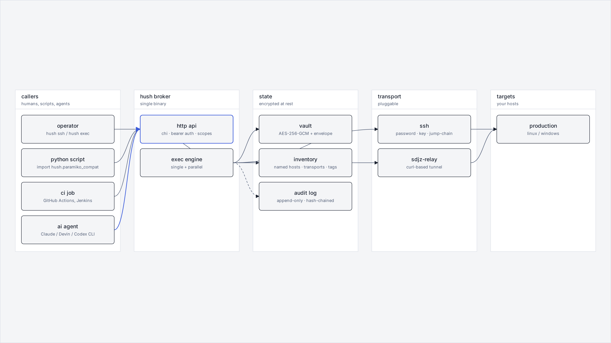

Credentials, brokered.
A small Go binary that holds credentials in an encrypted vault and runs commands on remote hosts on the caller's behalf. Python scripts, CI jobs, and AI agents call hush; the raw password never reaches the caller.
Source · Releases · Install · Five-minute start · For agents
The problem
A small ops repo accumulates twelve files that look like this:
# scripts/ssh/ssh_hk.py
import paramiko
PASSWORD = "super-secret-root-password"
ssh = paramiko.SSHClient()
ssh.set_missing_host_key_policy(paramiko.AutoAddPolicy())
ssh.connect(
"hk1.example.com",
port=22,
username="root",
password=PASSWORD,
)
ssh.exec_command("systemctl status nginx")
Multiply that by every region and every script and every teammate who copy-pasted the snippet, and the repo arrives at sixty-four paramiko.connect calls — each one carrying a hardcoded password, each one rotated by hand whenever someone leaves. There is no audit log. There is no review. There is no way to give an AI agent permission to run one of those commands without also handing it the credential.
The shim
The drop-in replacement is one import line:
import hush.paramiko_compat as paramiko
ssh = paramiko.SSHClient()
ssh.connect("hk1")
ssh.exec_command("systemctl status nginx")
Behind the scenes, hush resolves the name hk1 to a transport — password SSH, key SSH, a jump-host chain, or one of the curl-based relay tunnels — and a credential pulled from the vault. The caller's process never holds the password and never has the chance to log it.
For new code, the high-level API reads the same way:
from hush import remote
remote.exec("hk1", "systemctl status nginx")
remote.put("hk2", "./worker", "/opt/uapipro/worker")
remote.exec_many(tag="prod", cmd="uname -a")
And for the existing twelve files, hush migrate scan ./scripts/ walks the AST, lists the eleven hardcoded credentials it finds, suggests vault names, and writes a diff for review. Nothing is rotated until you say so.
Six surfaces, one broker
The same broker is reachable from six call sites. Pick whichever fits the caller — they all hit the same vault, leave the same audit entry, and never expose a credential.
# bash CLI
$ hush exec hk1 -- "systemctl status nginx"
# python · paramiko shim
import hush.paramiko_compat as paramiko
paramiko.SSHClient().connect("hk1")
# python · sdk
from hush import remote
remote.exec("hk1", "systemctl status nginx")
# go sdk
c := hush.New()
c.Exec("hk1", "systemctl status nginx")
# http
$ curl -X POST 'http://127.0.0.1:8443/v1/exec' \
-H 'authorization: hk_live_…' \
-d '{"host":"hk1","cmd":"systemctl status nginx"}'
# mcp · for agent runtimes that load mcp servers
host_exec({ host: "hk1", cmd: "systemctl status nginx" })How it works

Four modules carry single responsibilities. The vault stores secrets under AES-256-GCM with envelope encryption — each entry has its own data-encryption-key, wrapped by a key-encryption-key sourced from env, a file, or a KMS. Plaintext lives only between the vault read and the transport handshake.
The inventory turns names into resolved targets. hk1 is a name; behind it is a transport choice and an authentication kind. Tagged hosts make fan-out exec a one-liner: hush exec --tag prod -- uptime.
The audit log is append-only and hash-chained. Every read, exec, put, and get records the actor, the action, the resolved target, and the outcome — then commits the SHA-256 of the previous record into the next. hush audit verify walks the chain and refuses to validate if any record has been mutated. It is the same primitive Sigstore Rekor uses for supply-chain proofs.
The API is the only entry point for everything else. Bearer tokens are scoped per resource — secret:read, host:exec, host:put, audit:read. Output streams instead of buffering, so a one-hour tail -f does not bloat the broker's memory.
Five minutes from clone to first exec
Hush is a single binary plus a vault file plus a config. The flow below is the entire daily-driver loop.
# 1. pick a master key. it is never written to disk by hush.
$ export HUSH_MASTER_KEY=$(openssl rand -base64 32)
# 2. start the broker. one process, one port.
$ hush bootstrap # mints admin token (printed once)
$ hush server & # listens on 127.0.0.1:8443
# 3. log the cli in. writes ~/.hush/config at mode 0600.
$ hush login --endpoint http://127.0.0.1:8443 --api-key hk_live_…
# 4. push a credential into the vault and attach it to a name.
$ echo 'super-secret-root-password' | hush secret set hk1-root-password --stdin
$ hush host add hk1 \
--transport ssh --address 10.0.0.10 --port 22 --user root \
--auth-kind password --auth-secret hk1-root-password --tag prod
# 5. use it.
$ hush exec hk1 -- "systemctl status nginx"
$ hush exec --tag prod -- "uptime"
$ hush cp ./build.tar.gz hk1:/opt/app/build.tar.gz
$ hush ssh hk1
$ hush audit verify
The ~/.hush/config file is portable — copy it to a CI runner or another laptop, set HUSH_MASTER_KEY, and the same commands work.
For AI agents
Modern coding agents speak bash, so hush is shaped for that — the verbs read like ssh and scp, errors are structured, and exit codes are honest. The repo also ships an Agent Skill at skills/hush/SKILL.md for runtimes that load skill directories — Claude Code, Claude Desktop, Cursor, Aider, and Devin via AGENTS.md.
$ mkdir -p .claude/skills
$ cp -r skills/hush .claude/skills/hush
$ hush apikey mint \
--name claude-code \
--scope host:exec,host:list,secret:read
$ hush audit tail --follow
host.exec hk1 exit=0 "systemctl status nginx"
secret.read hk1-root-password caller=claude-codeThe skill describes when to call hush, the available verbs, common patterns, and the boundaries — for example, never echoing the plaintext of a vault entry to a chat surface. API keys are scoped, so a leaked token reads only what it was minted for; revoke the token and the leak is closed.
Install
# macOS · Linux
$ curl -fsSL https://github.com/shuakami/hush/releases/latest/download/install.sh | sh
# Windows · PowerShell
PS> iwr https://github.com/shuakami/hush/releases/latest/download/install.ps1 -useb | iex
# Go
$ go install github.com/shuakami/hush/cmd/hush@latest
# Docker
$ docker run --rm -p 7777:7777 -v hush-data:/data ghcr.io/shuakami/hush:latest
# Python SDK
$ pip install git+https://github.com/shuakami/hush.git#subdirectory=sdk/pythonRoughly fifty megabytes. Zero runtime dependencies. Linux, darwin, and windows on amd64 and arm64.
Status
v0.1 is the first public cut: vault, multi-transport exec broker, hash-chained audit, paramiko shim, Python SDK, MCP wrapper, and the migrate scanner. Roadmap and issue tracker live on GitHub. MIT licensed. No telemetry, no analytics, no fonts hosted by us.